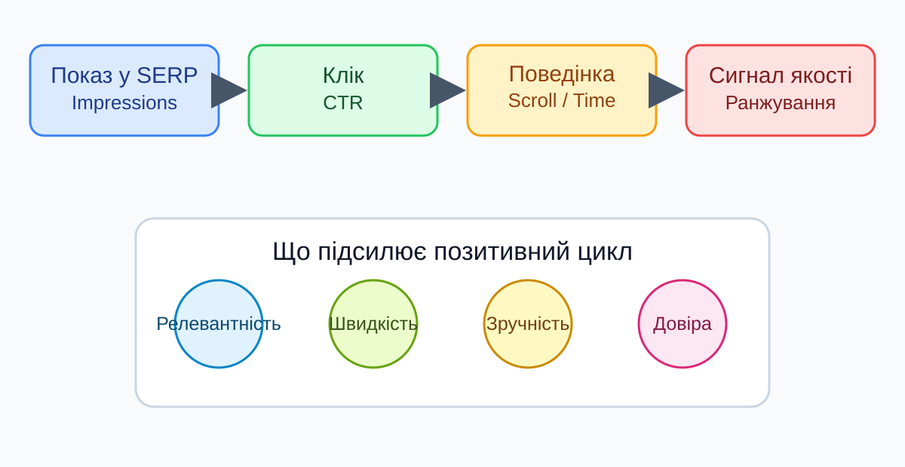
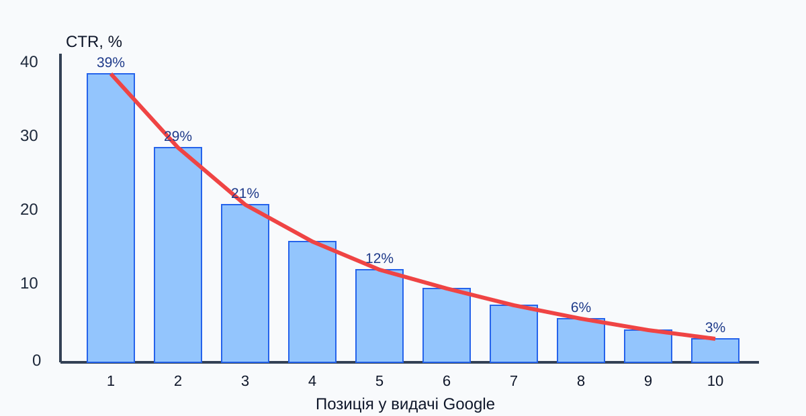
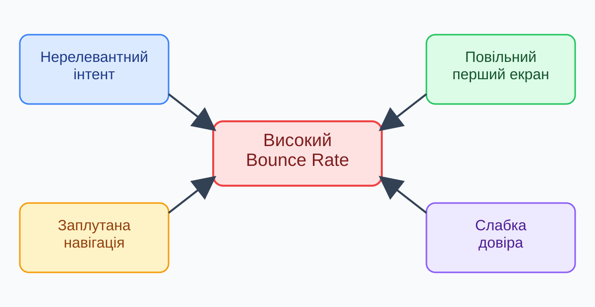
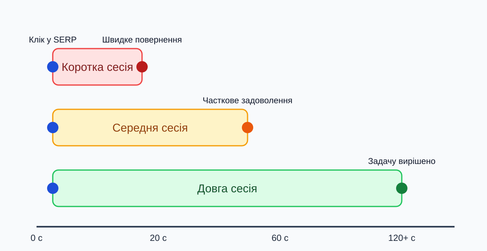
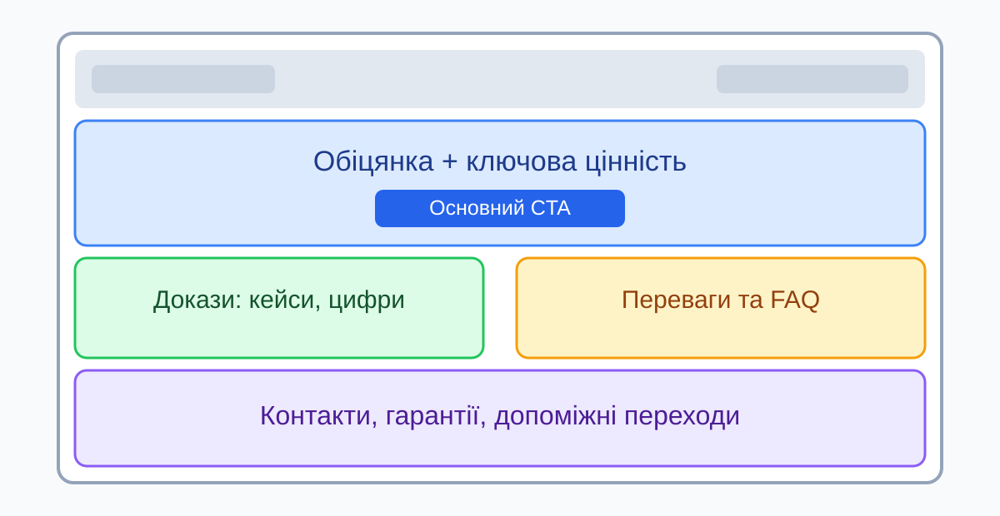
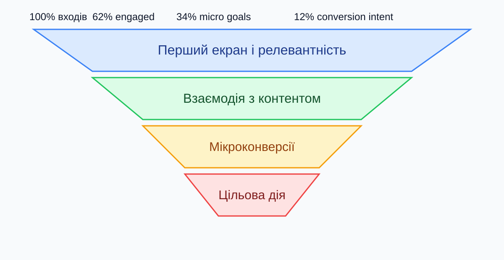
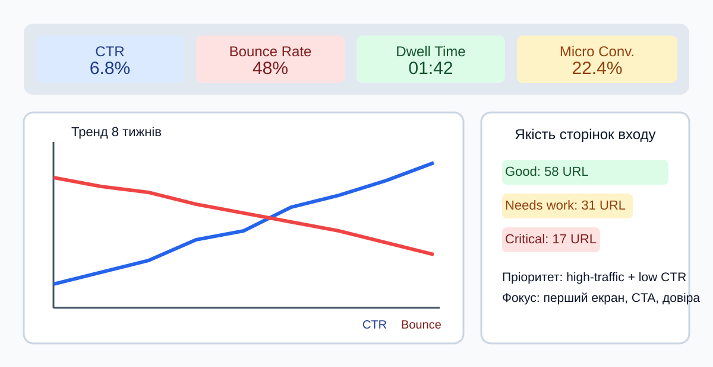

Лекція 9. Поведінкові фактори та UX
План лекції:
- CTR, Bounce Rate, Dwell Time
- UX як SEO-фактор
- Оптимізація сторінок входу
- Метрики, експерименти та roadmap
Поведінкові фактори: що це
Поведінкові фактори - це сигнали про те, як користувачі взаємодіють із результатом у пошуку та самою сторінкою.
- Допомагають пошуковим системам оцінити реальну корисність документа
- Працюють у зв'язці з релевантністю контенту та технічною якістю
- Формуються не однією метрикою, а патерном поведінки
Як поведінка впливає на видимість

CTR: базова метрика клікабельності
SERP (Search Engine Results Page) - сторінка результатів пошуку.
CTR (Click-Through Rate) - частка показів у SERP, які завершилися кліком.
Формула: CTR = (Clicks / Impressions) x 100%
- Оцінюється за конкретними запитами, сторінками, країнами й пристроями
- Низький CTR при високих показах часто сигналізує про слабкий сніпет
- Порівнювати CTR потрібно в межах однієї позиційної групи
Що впливає на CTR у SERP
- Title: чітка відповідь на намір запиту, без клікбейту
- Description: коротка користь, релевантні тригери, конкретика
- URL/хлібні крихти: зрозуміла структура підвищує довіру
- Rich Results: рейтинг, FAQ, ціна, наявність, дата
- Брендовий ефект: знайоме ім'я збільшує ймовірність кліку
Типова крива CTR за позиціями

Як підвищувати CTR без ризиків
- Оновлювати title/description на сторінках із високими показами та низьким CTR
- Підкреслювати цінність: цифри, терміни, формат матеріалу
- Уникати обіцянок, яких сторінка не виконує після кліку
- Розмічати дані через Schema.org там, де це доречно
- Проводити A/B тести сніпетів у контрольних групах сторінок
Bounce Rate: як трактувати правильно
Bounce Rate - частка сесій без значущої взаємодії або переходу далі по сайту.
- Високий bounce не завжди означає поганий UX
- Для швидкої відповіді (погода, курс, довідка) «single-page success» нормальний
- Проблема виникає, коли користувач іде через нерелевантний або незручний досвід
Коли bounce нормальний, а коли ні
| Сценарій |
Високий Bounce |
Оцінка |
Дія |
| FAQ-сторінка |
65-85% |
Нормально |
Міряти скрол/час/копіювання |
| Категорія e-commerce |
65%+ |
Ризик |
Покращити фільтри та релевантність |
| Landing під рекламу |
70%+ |
Високий ризик |
Звірити обіцянку і контент |
| Блогова стаття |
60-75% |
Залежить від intent |
Додати внутрішні кроки далі |
Типові причини високого Bounce Rate

Dwell Time і pogo-sticking
Dwell Time - час між кліком у SERP і поверненням до результатів пошуку.
- Короткий dwell time + повернення в SERP часто означає, що відповідь не знайдено
- Pogo-sticking - серія швидких переходів між результатами у пошуку
- Мета: дати корисний контент одразу, щоб користувач завершив задачу у вас
Сценарії Dwell Time у реальних сесіях

Як збільшити Dwell Time по суті
- Перший екран має підтверджувати намір запиту за 3-5 секунд
- Структурувати матеріал: підзаголовки, маркери, короткі блоки
- Додавати візуальні докази: приклади, таблиці, скриншоти, кейси
- Вбудовувати логічні «наступні кроки» через внутрішню перелінковку
- Прибирати UX-шуми: агресивні pop-up, автостарт відео, банерний хаос
UX як SEO-фактор: ключові принципи
- Релевантність: сторінка відповідає запиту, а не просто містить ключове слово
- Зручність: користувач швидко знаходить потрібний блок або дію
- Довіра: прозорий бренд, контакти, ціни, гарантії, безпечні форми
- Передбачуваність: інтерфейс поводиться стабільно на всіх пристроях
UX-сигнали, що впливають на SEO
- Швидкість завантаження і стабільність макета
- Читабельність тексту та контрастність елементів
- Якість навігації: меню, пошук, breadcrumbs, фільтри
- Зрозумілі CTA та прозорий шлях до конверсії
- Відсутність блокуючих міжсторінкових перешкод
Сторінка входу: типові UX-помилки
- Title обіцяє одне, а H1 і контент про інше
- На першому екрані немає чіткої користі
- Повільний LCP на мобільних мережах
- Надто ранній pop-up перекриває контент
- Складна форма з 10+ полями на старті
- Немає довіри: відгуків, кейсів, контактів
- CTA непомітний або дублює різні цілі
- Слабка перелінковка на наступні кроки
Анатомія ефективної сторінки входу

Above the fold: що має бути одразу
- Чіткий H1, що повторює намір пошукового запиту
- Коротка ціннісна пропозиція: що саме користувач отримує
- Основний CTA і альтернативний безпечний крок (наприклад, демо)
- Елемент довіри: цифра, рейтинг, логотипи клієнтів, сертифікат
- Зручний мобільний вигляд без горизонтального скролу
Матчинг intent і типу сторінки
| Тип запиту |
Що очікує користувач |
Оптимальний формат |
Головний KPI |
| Інформаційний |
Пояснення / інструкція |
Гайд, стаття, FAQ |
Dwell Time, Scroll |
| Комерційний |
Порівняння рішень |
Категорія, лендінг, огляд |
CTR, переходи в картки |
| Транзакційний |
Купити / замовити |
Картка товару, checkout |
CR, додавання в кошик |
| Навігаційний |
Знайти конкретний бренд |
Головна/брендова сторінка |
CTR, бренд-запити |
Утримання користувача після входу

Мікроконверсії як ранні UX-сигнали
- Клік по CTA, скрол до 75%, відкриття FAQ, перегляд таблиці цін
- Підписка, завантаження PDF, перегляд відео до 50%+
- Перехід на суміжну сторінку кластера через внутрішню перелінковку
- Мікроконверсії дозволяють бачити прогрес до продажу раніше за фінальний CR
Mobile UX для сторінок входу
- Tap targets не менші за 44x44 px, з достатніми відступами між кнопками
- Шрифти читабельні без масштабування, рядки не «ламаються» хаотично
- Форми короткі: автозаповнення, правильні type для клавіатури
- Критичні елементи не повинні «ховатися» під sticky-блоками
- Тестувати на реальних девайсах, а не лише в емуляторі
Експерименти: як тестувати UX без шкоди SEO
- Тестувати layout, CTA, блоки довіри, порядок секцій
- Не змінювати різко інформаційну сутність сторінки під той самий URL
- Тримати контрольну групу сторінок для коректного порівняння
- Оцінювати результат за 2 групами KPI: поведінка + бізнес
Інструменти аналізу поведінкових факторів
- Google Search Console: CTR, покази, позиції на рівні запитів і URL
- GA4: engagement rate, engaged sessions, події та конверсії
- Clarity / Hotjar: теплові карти, записи сесій, rage-click аналіз
- PageSpeed Insights: технічні обмеження, що псують UX першого екрана
- A/B платформи: перевірка гіпотез з доказовим ефектом
Dashboard ключових UX та SEO KPI

План покращення на 30 днів
- Тиждень 1: аудит сторінок входу, сегментація за intent і трафіком
- Тиждень 2: оновлення сніпетів та першого екрана пріоритетних URL
- Тиждень 3: оптимізація навігації, CTA, форм і мікроконверсій
- Тиждень 4: A/B тест, оцінка KPI, закріплення змін у шаблонах
Висновки лекції
- CTR, Bounce Rate і Dwell Time треба аналізувати як систему, а не окремо
- UX безпосередньо впливає на SEO через задоволення наміру користувача
- Найсильніший ефект дає оптимізація сторінок входу під конкретний intent
- Рішення мають базуватися на даних: експерименти, дашборди, регулярний контроль